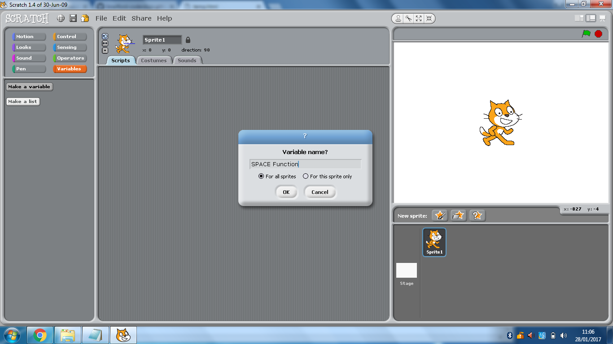
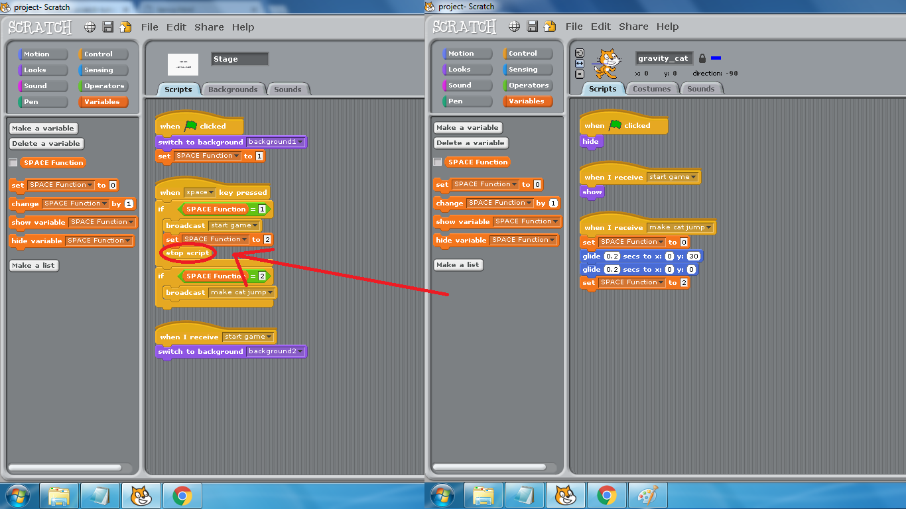

How to use varibles to control the function something depending on the circumstances
Example One - How to make the same button have different functions, depending on the circumstances
Difficulty? It depends, if your project only has one or two of these, then there will be no problem. However, if you have a project that has lots of them and they depend on each other (one of mine had nearly 20) it can get very complicated and fustrating
.
Create a variable called 'SPACE Function'

This variable will determine what the SPACE button does when you press it, in the scripts below, when SPACE Function is set to '1',
it starts the game, when SPACE Function is set to '2', it makes the cat jump, when SPACE Function is set to '0', it does nothing.

Notice I have circled 'stop script', this is a common mistake people make. Since the 'SPACE Function' has changed to '2', without the
'stop script' command
the script would've continued to what will happen if 'SPACE Function' is set to '2' (the cat will jump). This won't be much of a
mistake in this project, as all will happen is the cat will jump automatically, but say if you were using the SPACE key to move through
pages in a book, you wouldn't be able to read the book as all the pages will automatically move forward without you having the chance to read them.